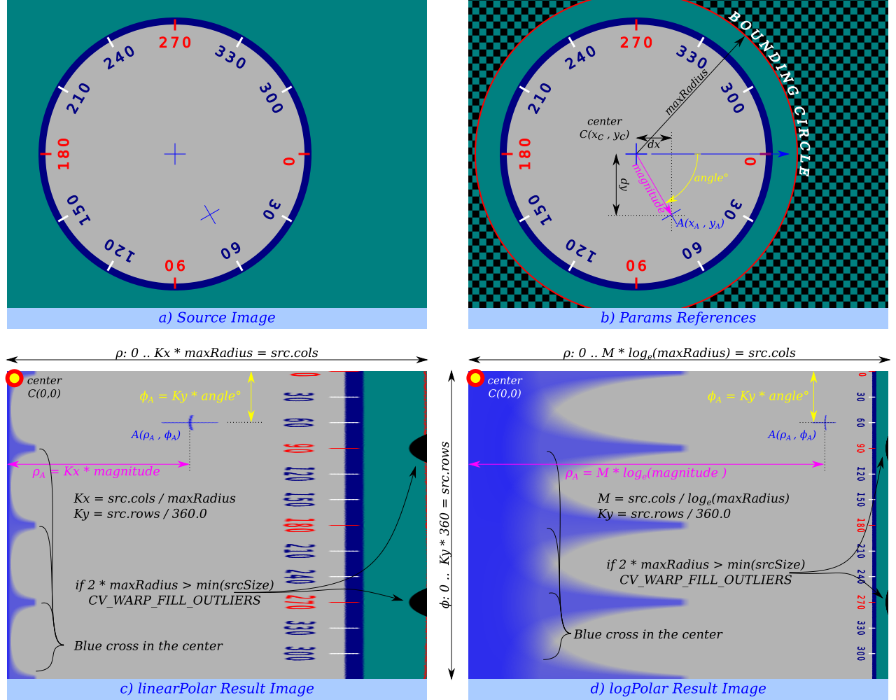

Geometric Image Transformations
Overview
The functions in this section perform various geometrical transformations of 2D images. More…
// enums enum cv::InterpolationFlags; enum cv::InterpolationMasks; // global functions void cv::convertMaps( InputArray map1, InputArray map2, OutputArray dstmap1, OutputArray dstmap2, int dstmap1type, bool nninterpolation = false ); Mat cv::getAffineTransform( const Point2f src [], const Point2f dst [] ); Mat cv::getAffineTransform( InputArray src, InputArray dst ); Mat cv::getDefaultNewCameraMatrix( InputArray cameraMatrix, Size imgsize = Size(), bool centerPrincipalPoint = false ); Mat cv::getPerspectiveTransform( const Point2f src [], const Point2f dst [] ); Mat cv::getPerspectiveTransform( InputArray src, InputArray dst ); void cv::getRectSubPix( InputArray image, Size patchSize, Point2f center, OutputArray patch, int patchType = -1 ); Mat cv::getRotationMatrix2D( Point2f center, double angle, double scale ); void cv::initUndistortRectifyMap( InputArray cameraMatrix, InputArray distCoeffs, InputArray R, InputArray newCameraMatrix, Size size, int m1type, OutputArray map1, OutputArray map2 ); float cv::initWideAngleProjMap( InputArray cameraMatrix, InputArray distCoeffs, Size imageSize, int destImageWidth, int m1type, OutputArray map1, OutputArray map2, int projType = PROJ_SPHERICAL_EQRECT, double alpha = 0 ); void cv::invertAffineTransform( InputArray M, OutputArray iM ); void cv::linearPolar( InputArray src, OutputArray dst, Point2f center, double maxRadius, int flags ); void cv::logPolar( InputArray src, OutputArray dst, Point2f center, double M, int flags ); void cv::remap( InputArray src, OutputArray dst, InputArray map1, InputArray map2, int interpolation, int borderMode = BORDER_CONSTANT, const Scalar& borderValue = Scalar() ); void cv::resize( InputArray src, OutputArray dst, Size dsize, double fx = 0, double fy = 0, int interpolation = INTER_LINEAR ); void cv::undistort( InputArray src, OutputArray dst, InputArray cameraMatrix, InputArray distCoeffs, InputArray newCameraMatrix = noArray() ); void cv::undistortPoints( InputArray src, OutputArray dst, InputArray cameraMatrix, InputArray distCoeffs, InputArray R = noArray(), InputArray P = noArray() ); void cv::warpAffine( InputArray src, OutputArray dst, InputArray M, Size dsize, int flags = INTER_LINEAR, int borderMode = BORDER_CONSTANT, const Scalar& borderValue = Scalar() ); void cv::warpPerspective( InputArray src, OutputArray dst, InputArray M, Size dsize, int flags = INTER_LINEAR, int borderMode = BORDER_CONSTANT, const Scalar& borderValue = Scalar() );
Detailed Documentation
The functions in this section perform various geometrical transformations of 2D images. They do not change the image content but deform the pixel grid and map this deformed grid to the destination image. In fact, to avoid sampling artifacts, the mapping is done in the reverse order, from destination to the source. That is, for each pixel \((x, y)\) of the destination image, the functions compute coordinates of the corresponding “donor” pixel in the source image and copy the pixel value:
In case when you specify the forward mapping \(\left<g_x, g_y\right>: \texttt{src} \rightarrow \texttt{dst}\), the OpenCV functions first compute the corresponding inverse mapping \(\left<f_x, f_y\right>: \texttt{dst} \rightarrow \texttt{src}\) and then use the above formula.
The actual implementations of the geometrical transformations, from the most generic remap and to the simplest and the fastest resize, need to solve two main problems with the above formula:
- Extrapolation of non-existing pixels. Similarly to the filtering functions described in the previous section, for some \((x,y)\), either one of \(f_x(x,y)\), or \(f_y(x,y)\), or both of them may fall outside of the image. In this case, an extrapolation method needs to be used. OpenCV provides the same selection of extrapolation methods as in the filtering functions. In addition, it provides the method BORDER_TRANSPARENT. This means that the corresponding pixels in the destination image will not be modified at all.
- Interpolation of pixel values. Usually \(f_x(x,y)\) and \(f_y(x,y)\) are floating-point numbers. This means that \(\left<f_x, f_y\right>\) can be either an affine or perspective transformation, or radial lens distortion correction, and so on. So, a pixel value at fractional coordinates needs to be retrieved. In the simplest case, the coordinates can be just rounded to the nearest integer coordinates and the corresponding pixel can be used. This is called a nearest-neighbor interpolation. However, a better result can be achieved by using more sophisticated interpolation methods, where a polynomial function is fit into some neighborhood of the computed pixel \((f_x(x,y), f_y(x,y))\), and then the value of the polynomial at \((f_x(x,y), f_y(x,y))\) is taken as the interpolated pixel value. In OpenCV, you can choose between several interpolation methods. See resize for details.
Global Functions
void cv::convertMaps( InputArray map1, InputArray map2, OutputArray dstmap1, OutputArray dstmap2, int dstmap1type, bool nninterpolation = false )
Converts image transformation maps from one representation to another.
The function converts a pair of maps for remap from one representation to another. The following options ( (map1.type(), map2.type()) \(\rightarrow\) (dstmap1.type(), dstmap2.type()) ) are supported:
- \(\texttt{(CV_32FC1, CV_32FC1)} \rightarrow \texttt{(CV_16SC2, CV_16UC1)}\). This is the most frequently used conversion operation, in which the original floating-point maps (see remap ) are converted to a more compact and much faster fixed-point representation. The first output array contains the rounded coordinates and the second array (created only when nninterpolation=false ) contains indices in the interpolation tables.
- \(\texttt{(CV_32FC2)} \rightarrow \texttt{(CV_16SC2, CV_16UC1)}\). The same as above but the original maps are stored in one 2-channel matrix.
- Reverse conversion. Obviously, the reconstructed floating-point maps will not be exactly the same as the originals.
Parameters:
| map1 | The first input map of type CV_16SC2, CV_32FC1, or CV_32FC2 . |
| map2 | The second input map of type CV_16UC1, CV_32FC1, or none (empty matrix), respectively. |
| dstmap1 | The first output map that has the type dstmap1type and the same size as src . |
| dstmap2 | The second output map. |
| dstmap1type | Type of the first output map that should be CV_16SC2, CV_32FC1, or CV_32FC2 . |
| nninterpolation | Flag indicating whether the fixed-point maps are used for the nearest-neighbor or for a more complex interpolation. |
See also:
remap, undistort, initUndistortRectifyMap
Mat cv::getAffineTransform( const Point2f src [], const Point2f dst [] )
Calculates an affine transform from three pairs of the corresponding points.
The function calculates the \(2 \times 3\) matrix of an affine transform so that:
where
Parameters:
| src | Coordinates of triangle vertices in the source image. |
| dst | Coordinates of the corresponding triangle vertices in the destination image. |
See also:
Mat cv::getDefaultNewCameraMatrix( InputArray cameraMatrix, Size imgsize = Size(), bool centerPrincipalPoint = false )
Returns the default new camera matrix.
The function returns the camera matrix that is either an exact copy of the input cameraMatrix (when centerPrinicipalPoint=false ), or the modified one (when centerPrincipalPoint=true).
In the latter case, the new camera matrix will be:
where \(f_x\) and \(f_y\) are \((0,0)\) and \((1,1)\) elements of cameraMatrix, respectively.
By default, the undistortion functions in OpenCV (see initUndistortRectifyMap, undistort) do not move the principal point. However, when you work with stereo, it is important to move the principal points in both views to the same y-coordinate (which is required by most of stereo correspondence algorithms), and may be to the same x-coordinate too. So, you can form the new camera matrix for each view where the principal points are located at the center.
Parameters:
| cameraMatrix | Input camera matrix. |
| imgsize | Camera view image size in pixels. |
| centerPrincipalPoint | Location of the principal point in the new camera matrix. The parameter indicates whether this location should be at the image center or not. |
Mat cv::getPerspectiveTransform( const Point2f src [], const Point2f dst [] )
returns 3x3 perspective transformation for the corresponding 4 point pairs.
Mat cv::getPerspectiveTransform( InputArray src, InputArray dst )
Calculates a perspective transform from four pairs of the corresponding points.
The function calculates the \(3 \times 3\) matrix of a perspective transform so that:
where
Parameters:
| src | Coordinates of quadrangle vertices in the source image. |
| dst | Coordinates of the corresponding quadrangle vertices in the destination image. |
See also:
findHomography, warpPerspective, perspectiveTransform
void cv::getRectSubPix( InputArray image, Size patchSize, Point2f center, OutputArray patch, int patchType = -1 )
Retrieves a pixel rectangle from an image with sub-pixel accuracy.
The function getRectSubPix extracts pixels from src:
where the values of the pixels at non-integer coordinates are retrieved using bilinear interpolation. Every channel of multi-channel images is processed independently. While the center of the rectangle must be inside the image, parts of the rectangle may be outside. In this case, the replication border mode (see cv::BorderTypes) is used to extrapolate the pixel values outside of the image.
Parameters:
| image | Source image. |
| patchSize | Size of the extracted patch. |
| center | Floating point coordinates of the center of the extracted rectangle within the source image. The center must be inside the image. |
| patch | Extracted patch that has the size patchSize and the same number of channels as src . |
| patchType | Depth of the extracted pixels. By default, they have the same depth as src . |
See also:
Mat cv::getRotationMatrix2D( Point2f center, double angle, double scale )
Calculates an affine matrix of 2D rotation.
The function calculates the following matrix:
where
The transformation maps the rotation center to itself. If this is not the target, adjust the shift.
Parameters:
| center | Center of the rotation in the source image. |
| angle | Rotation angle in degrees. Positive values mean counter-clockwise rotation (the coordinate origin is assumed to be the top-left corner). |
| scale | Isotropic scale factor. |
See also:
getAffineTransform, warpAffine, transform
void cv::initUndistortRectifyMap( InputArray cameraMatrix, InputArray distCoeffs, InputArray R, InputArray newCameraMatrix, Size size, int m1type, OutputArray map1, OutputArray map2 )
Computes the undistortion and rectification transformation map.
The function computes the joint undistortion and rectification transformation and represents the result in the form of maps for remap. The undistorted image looks like original, as if it is captured with a camera using the camera matrix =newCameraMatrix and zero distortion. In case of a monocular camera, newCameraMatrix is usually equal to cameraMatrix, or it can be computed by cv::getOptimalNewCameraMatrix for a better control over scaling. In case of a stereo camera, newCameraMatrix is normally set to P1 or P2 computed by cv::stereoRectify.
Also, this new camera is oriented differently in the coordinate space, according to R. That, for example, helps to align two heads of a stereo camera so that the epipolar lines on both images become horizontal and have the same y- coordinate (in case of a horizontally aligned stereo camera).
The function actually builds the maps for the inverse mapping algorithm that is used by remap. That is, for each pixel \((u, v)\) in the destination (corrected and rectified) image, the function computes the corresponding coordinates in the source image (that is, in the original image from camera). The following process is applied:
where \((k_1, k_2, p_1, p_2[, k_3[, k_4, k_5, k_6[, s_1, s_2, s_3, s_4[, \tau_x, \tau_y]]]])\) are the distortion coefficients.
In case of a stereo camera, this function is called twice: once for each camera head, after stereoRectify, which in its turn is called after cv::stereoCalibrate. But if the stereo camera was not calibrated, it is still possible to compute the rectification transformations directly from the fundamental matrix using cv::stereoRectifyUncalibrated. For each camera, the function computes homography H as the rectification transformation in a pixel domain, not a rotation matrix R in 3D space. R can be computed from H as
where cameraMatrix can be chosen arbitrarily.
Parameters:
| cameraMatrix | Input camera matrix \(A=\vecthreethree{f_x}{0}{c_x}{0}{f_y}{c_y}{0}{0}{1}\). |
| distCoeffs | Input vector of distortion coefficients \((k_1, k_2, p_1, p_2[, k_3[, k_4, k_5, k_6[, s_1, s_2, s_3, s_4[, \tau_x, \tau_y]]]])\) of 4, 5, 8, 12 or 14 elements. If the vector is NULL/empty, the zero distortion coefficients are assumed. |
| R | Optional rectification transformation in the object space (3x3 matrix). R1 or R2 , computed by stereoRectify can be passed here. If the matrix is empty, the identity transformation is assumed. In cvInitUndistortMap R assumed to be an identity matrix. |
| newCameraMatrix | New camera matrix \(A'=\vecthreethree{f_x'}{0}{c_x'}{0}{f_y'}{c_y'}{0}{0}{1}\). |
| size | Undistorted image size. |
| m1type | Type of the first output map that can be CV_32FC1, CV_32FC2 or CV_16SC2, see cv::convertMaps |
| map1 | The first output map. |
| map2 | The second output map. |
float cv::initWideAngleProjMap( InputArray cameraMatrix, InputArray distCoeffs, Size imageSize, int destImageWidth, int m1type, OutputArray map1, OutputArray map2, int projType = PROJ_SPHERICAL_EQRECT, double alpha = 0 )
initializes maps for cv::remap() for wide-angle
void cv::invertAffineTransform( InputArray M, OutputArray iM )
Inverts an affine transformation.
The function computes an inverse affine transformation represented by \(2 \times 3\) matrix M:
The result is also a \(2 \times 3\) matrix of the same type as M.
Parameters:
| M | Original affine transformation. |
| iM | Output reverse affine transformation. |
void cv::linearPolar( InputArray src, OutputArray dst, Point2f center, double maxRadius, int flags )
Remaps an image to polar coordinates space.

Transform the source image using the following transformation:
where
and
- The function can not operate in-place.
- To calculate magnitude and angle in degrees cv::cartToPolar is used internally thus angles are measured from 0 to 360 with accuracy about 0.3 degrees.
Parameters:
| src | Source image |
| dst | Destination image. It will have same size and type as src. |
| center | The transformation center; |
| maxRadius | The radius of the bounding circle to transform. It determines the inverse magnitude scale parameter too. |
| flags | A combination of interpolation methods, see cv::InterpolationFlags |
void cv::logPolar( InputArray src, OutputArray dst, Point2f center, double M, int flags )
Remaps an image to semilog-polar coordinates space.
Transform the source image using the following transformation (See Polar remaps reference image):
where
and
The function emulates the human “foveal” vision and can be used for fast scale and rotation-invariant template matching, for object tracking and so forth. * The function can not operate in-place.
- To calculate magnitude and angle in degrees cv::cartToPolar is used internally thus angles are measured from 0 to 360 with accuracy about 0.3 degrees.
Parameters:
| src | Source image |
| dst | Destination image. It will have same size and type as src. |
| center | The transformation center; where the output precision is maximal |
| M | Magnitude scale parameter. It determines the radius of the bounding circle to transform too. |
| flags | A combination of interpolation methods, see cv::InterpolationFlags |
void cv::remap( InputArray src, OutputArray dst, InputArray map1, InputArray map2, int interpolation, int borderMode = BORDER_CONSTANT, const Scalar& borderValue = Scalar() )
Applies a generic geometrical transformation to an image.
The function remap transforms the source image using the specified map:
where values of pixels with non-integer coordinates are computed using one of available interpolation methods. \(map_x\) and \(map_y\) can be encoded as separate floating-point maps in \(map_1\) and \(map_2\) respectively, or interleaved floating-point maps of \((x,y)\) in \(map_1\), or fixed-point maps created by using convertMaps. The reason you might want to convert from floating to fixed-point representations of a map is that they can yield much faster (2x) remapping operations. In the converted case, \(map_1\) contains pairs (cvFloor(x), cvFloor(y)) and \(map_2\) contains indices in a table of interpolation coefficients.
This function cannot operate in-place.
Due to current implementaion limitations the size of an input and output images should be less than 32767x32767.
Parameters:
| src | Source image. |
| dst | Destination image. It has the same size as map1 and the same type as src . |
| map1 | The first map of either (x,y) points or just x values having the type CV_16SC2 , CV_32FC1, or CV_32FC2. See convertMaps for details on converting a floating point representation to fixed-point for speed. |
| map2 | The second map of y values having the type CV_16UC1, CV_32FC1, or none (empty map if map1 is (x,y) points), respectively. |
| interpolation | Interpolation method (see cv::InterpolationFlags). The method INTER_AREA is not supported by this function. |
| borderMode | Pixel extrapolation method (see cv::BorderTypes). When borderMode=BORDER_TRANSPARENT, it means that the pixels in the destination image that corresponds to the “outliers” in the source image are not modified by the function. |
| borderValue | Value used in case of a constant border. By default, it is 0. |
void cv::resize( InputArray src, OutputArray dst, Size dsize, double fx = 0, double fy = 0, int interpolation = INTER_LINEAR )
Resizes an image.
The function resize resizes the image src down to or up to the specified size. Note that the initial dst type or size are not taken into account. Instead, the size and type are derived from the src, dsize, fx, and fy. If you want to resize src so that it fits the pre-created dst, you may call the function as follows:
// explicitly specify dsize=dst.size(); fx and fy will be computed from that. resize(src, dst, dst.size(), 0, 0, interpolation);
If you want to decimate the image by factor of 2 in each direction, you can call the function this way:
// specify fx and fy and let the function compute the destination image size. resize(src, dst, Size(), 0.5, 0.5, interpolation);
To shrink an image, it will generally look best with cv::INTER_AREA interpolation, whereas to enlarge an image, it will generally look best with cv::INTER_CUBIC (slow) or cv::INTER_LINEAR (faster but still looks OK).
Parameters:
| src | input image. |
| dst | output image; it has the size dsize (when it is non-zero) or the size computed from src.size(), fx, and fy; the type of dst is the same as of src. |
| dsize | output image size; if it equals zero, it is computed as:
\[\texttt{dsize = Size(round(fx*src.cols), round(fy*src.rows))}\]
Either dsize or both fx and fy must be non-zero. |
| fx | scale factor along the horizontal axis; when it equals 0, it is computed as
\[\texttt{(double)dsize.width/src.cols}\]
|
| fy | scale factor along the vertical axis; when it equals 0, it is computed as
\[\texttt{(double)dsize.height/src.rows}\]
|
| interpolation | interpolation method, see cv::InterpolationFlags |
See also:
warpAffine, warpPerspective, remap
void cv::undistort( InputArray src, OutputArray dst, InputArray cameraMatrix, InputArray distCoeffs, InputArray newCameraMatrix = noArray() )
Transforms an image to compensate for lens distortion.
The function transforms an image to compensate radial and tangential lens distortion.
The function is simply a combination of cv::initUndistortRectifyMap (with unity R ) and cv::remap (with bilinear interpolation). See the former function for details of the transformation being performed.
Those pixels in the destination image, for which there is no correspondent pixels in the source image, are filled with zeros (black color).
A particular subset of the source image that will be visible in the corrected image can be regulated by newCameraMatrix. You can use cv::getOptimalNewCameraMatrix to compute the appropriate newCameraMatrix depending on your requirements.
The camera matrix and the distortion parameters can be determined using cv::calibrateCamera. If the resolution of images is different from the resolution used at the calibration stage, \(f_x, f_y, c_x\) and \(c_y\) need to be scaled accordingly, while the distortion coefficients remain the same.
Parameters:
| src | Input (distorted) image. |
| dst | Output (corrected) image that has the same size and type as src . |
| cameraMatrix | Input camera matrix \(A = \vecthreethree{f_x}{0}{c_x}{0}{f_y}{c_y}{0}{0}{1}\). |
| distCoeffs | Input vector of distortion coefficients \((k_1, k_2, p_1, p_2[, k_3[, k_4, k_5, k_6[, s_1, s_2, s_3, s_4[, \tau_x, \tau_y]]]])\) of 4, 5, 8, 12 or 14 elements. If the vector is NULL/empty, the zero distortion coefficients are assumed. |
| newCameraMatrix | Camera matrix of the distorted image. By default, it is the same as cameraMatrix but you may additionally scale and shift the result by using a different matrix. |
void cv::undistortPoints( InputArray src, OutputArray dst, InputArray cameraMatrix, InputArray distCoeffs, InputArray R = noArray(), InputArray P = noArray() )
Computes the ideal point coordinates from the observed point coordinates.
The function is similar to cv::undistort and cv::initUndistortRectifyMap but it operates on a sparse set of points instead of a raster image. Also the function performs a reverse transformation to projectPoints. In case of a 3D object, it does not reconstruct its 3D coordinates, but for a planar object, it does, up to a translation vector, if the proper R is specified.
For each observed point coordinate \((u, v)\) the function computes:
where undistort is an approximate iterative algorithm that estimates the normalized original point coordinates out of the normalized distorted point coordinates (“normalized” means that the coordinates do not depend on the camera matrix).
The function can be used for both a stereo camera head or a monocular camera (when R is empty).
Parameters:
| src | Observed point coordinates, 1xN or Nx1 2-channel (CV_32FC2 or CV_64FC2). |
| dst | Output ideal point coordinates after undistortion and reverse perspective transformation. If matrix P is identity or omitted, dst will contain normalized point coordinates. |
| cameraMatrix | Camera matrix \(\vecthreethree{f_x}{0}{c_x}{0}{f_y}{c_y}{0}{0}{1}\). |
| distCoeffs | Input vector of distortion coefficients \((k_1, k_2, p_1, p_2[, k_3[, k_4, k_5, k_6[, s_1, s_2, s_3, s_4[, \tau_x, \tau_y]]]])\) of 4, 5, 8, 12 or 14 elements. If the vector is NULL/empty, the zero distortion coefficients are assumed. |
| R | Rectification transformation in the object space (3x3 matrix). R1 or R2 computed by cv::stereoRectify can be passed here. If the matrix is empty, the identity transformation is used. |
| P | New camera matrix (3x3) or new projection matrix (3x4) \(\begin{bmatrix} {f'}_x & 0 & {c'}_x & t_x \\ 0 & {f'}_y & {c'}_y & t_y \\ 0 & 0 & 1 & t_z \end{bmatrix}\). P1 or P2 computed by cv::stereoRectify can be passed here. If the matrix is empty, the identity new camera matrix is used. |
void cv::warpAffine( InputArray src, OutputArray dst, InputArray M, Size dsize, int flags = INTER_LINEAR, int borderMode = BORDER_CONSTANT, const Scalar& borderValue = Scalar() )
Applies an affine transformation to an image.
The function warpAffine transforms the source image using the specified matrix:
when the flag WARP_INVERSE_MAP is set. Otherwise, the transformation is first inverted with cv::invertAffineTransform and then put in the formula above instead of M. The function cannot operate in-place.
Parameters:
| src | input image. |
| dst | output image that has the size dsize and the same type as src . |
| M | \(2\times 3\) transformation matrix. |
| dsize | size of the output image. |
| flags | combination of interpolation methods (see cv::InterpolationFlags) and the optional flag WARP_INVERSE_MAP that means that M is the inverse transformation (\(\texttt{dst}\rightarrow\texttt{src}\)). |
| borderMode | pixel extrapolation method (see cv::BorderTypes); when borderMode=BORDER_TRANSPARENT, it means that the pixels in the destination image corresponding to the “outliers” in the source image are not modified by the function. |
| borderValue | value used in case of a constant border; by default, it is 0. |
See also:
warpPerspective, resize, remap, getRectSubPix, transform
void cv::warpPerspective( InputArray src, OutputArray dst, InputArray M, Size dsize, int flags = INTER_LINEAR, int borderMode = BORDER_CONSTANT, const Scalar& borderValue = Scalar() )
Applies a perspective transformation to an image.
The function warpPerspective transforms the source image using the specified matrix:
when the flag WARP_INVERSE_MAP is set. Otherwise, the transformation is first inverted with invert and then put in the formula above instead of M. The function cannot operate in-place.
Parameters:
| src | input image. |
| dst | output image that has the size dsize and the same type as src . |
| M | \(3\times 3\) transformation matrix. |
| dsize | size of the output image. |
| flags | combination of interpolation methods (INTER_LINEAR or INTER_NEAREST) and the optional flag WARP_INVERSE_MAP, that sets M as the inverse transformation (\(\texttt{dst}\rightarrow\texttt{src}\)). |
| borderMode | pixel extrapolation method (BORDER_CONSTANT or BORDER_REPLICATE). |
| borderValue | value used in case of a constant border; by default, it equals 0. |
See also:
warpAffine, resize, remap, getRectSubPix, perspectiveTransform